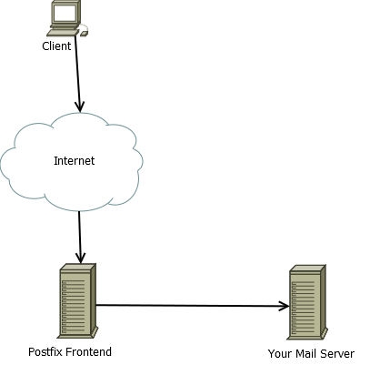

Настраиваем Postfix как антиспам Frontend.
Представим ситуацию, что вам нужно защититься от спама, а тратить деньги на платные решения не хочется.
Тут нам поможет связка Postfix + Spamasassin + Amavis.
В данном случае Postfix будет выступать как Frontend.
Работать это будет по следующей схеме:

Теперь перейдем к настройке.
Я буду производить настройку на Ubuntu 14.04 LTS
Обновим все пакеты:
apt-get update
apt-get upgrade
Устанавливаем Postfix
apt-get install postfix
Редактируем конфиг Postfix — /etc/postfix/main.cf
Приводим его к виду:
mydomain = mydomain.com myhostname = postfix.mydomain.com mydestination = mydomain.com mynetworks = 127.0.0.0/8 [::ffff:127.0.0.0]/104 [::1]/128 relay_domains = $mydestination smtpd_recipient_restrictions = permit_mynetworks,\ reject_unauth_destination,reject_invalid_hostname,\ reject_unauth_pipelining,reject_non_fqdn_sender, \ reject_unknown_recipient_domain,reject_unknown_sender_domain transport_maps = hash:/etc/postfix/transport local_recipient_maps =
Где:
mydomain — Ваш почтовый домен
myhostname — имя сервера postfix
mydestination — куда принимаем почту
mynetworks — разрешенные сети
Если вы используете Postfix во внешней сети, то закоментируйте строки:
#mynetworks = 127.0.0.0/8 [::ffff:127.0.0.0]/104 [::1]/128
#smtpd_recipient_restrictions = permit_mynetworks,\
Теперь создайте файл /etc/postfix/transport если его не существует:
touch /etc/postfix/transport
В данный файл добавьте:
mydomain.com smtp:[10.10.10.5]
Где, mydomain.com ваш домен, а 10.10.10.5 ip вашего почтового сервера.
Если ваш почтовый сервер принимает на не стандартном порту, то запись должна выглядеть так:
mydomain.com smtp:10.10.10.5:26
Где 26, порт на котором сервер принимает почту.
Добавляем параметры транспорта в базу Postfix:
postmap /etc/postfix/transport
Перезапускаем Postfix:
postfix reload
Теперь установим Amavis, Spamasassin, ClamAV и необходимые для них компоненты:
apt-get install amavisd-new spamassassin clamav-daemon
apt-get install libnet-dns-perl pyzor razor
apt-get install arj bzip2 cabextract cpio file gzip
apt-get install lhasa nomarch pax rar unrar unzip zip
Создадим пользователей и добавим их в группы:
adduser clamav amavis
adduser amavis clamav
Переводим службу Spamasassin в автозапуск, для этого редактируем файл /etc/default/spamassassin
И приводим его к такому виду:
ENABLED=1 CRON=1
Запускаем Spamasassin
service spamassassin start
Перейдем к настройке Amavis. Он выступает в качестве сканера контента входящих сообщений и работает в паре со Spamasassin.
Открываем файл — /etc/amavis/conf.d/15-content_filter_mode
И раскоментируем строки:
@bypass_virus_checks_maps = ( \%bypass_virus_checks, \@bypass_virus_checks_acl, $bypass_virus_checks_re); @bypass_spam_checks_maps = ( \%bypass_spam_checks, \@bypass_spam_checks_acl, $bypass_spam_checks_re);
Если ваш сервер не разрешается по имени, то добавляем в файл /etc/amavis/conf.d/05-node строку:
$myhostname = "postfix.mydomain.com";
Где postfix.mydomain.com имя вашего сервера.
Если вам нужно чтобы в спам письмах в тему добавлялось ****SPAM****, откройте файл /etc/amavis/conf.d/50-user
И добавьте в него строки:
$myhostname = 'postfix.mydomain.com'; @local_domains_acl = ( "mydomain.com", "mail.mydomain.com" );
Где в строке @local_domains_acl указываются ваши почтовые домены.
Теперь настроем тэгирование сообщений, открываем файл /etc/amavis/conf.d/50-user и добавляем строки:
$final_virus_destiny = D_PASS; # (defaults to D_BOUNCE) $final_spam_destiny = D_PASS; # (defaults to D_REJECT)
Перезапускаем Amavis:
service amavis restart
Теперь, настроим Postfix на работу с Amavis:
postconf -e "content_filter = smtp-amavis:[127.0.0.1]:10024"
После выполнения данной команды, в конце файла /etc/postfix/main.cf должна появиться строка:
content_filter = smtp-amavis:[127.0.0.1]:10024
Теперь откройте файл /etc/postfix/master.cf
После строки :
pickup unix n - - 60 1 pickup
Добавьте следующие строки (стоки добавьте с табуляцией):
-o content_filter= -o receive_override_options=no_header_body_checks
Должно получиться так:
pickup unix n - - 60 1 pickup -o content_filter= -o receive_override_options=no_header_body_checks
Теперь в самый конец файла добавьте следующие строки(стоки добавьте с табуляцией):
smtp-amavis unix - - - - 2 smtp -o smtp_data_done_timeout=1200 -o smtp_send_xforward_command=yes -o disable_dns_lookups=yes -o max_use=20 127.0.0.1:10025 inet n - - - - smtpd -o content_filter= -o local_recipient_maps= -o relay_recipient_maps= -o smtpd_restriction_classes= -o smtpd_delay_reject=no -o smtpd_client_restrictions=permit_mynetworks,reject -o smtpd_helo_restrictions= -o smtpd_sender_restrictions= -o smtpd_recipient_restrictions=permit_mynetworks,reject -o smtpd_data_restrictions=reject_unauth_pipelining -o smtpd_end_of_data_restrictions= -o mynetworks=127.0.0.0/8 -o smtpd_error_sleep_time=0 -o smtpd_soft_error_limit=1001 -o smtpd_hard_error_limit=1000 -o smtpd_client_connection_count_limit=0 -o smtpd_client_connection_rate_limit=0 -o receive_override_options=no_header_body_checks,no_unknown_recipient_checks
Перезапустите Postfix:
postfix reload
Теперь через telnet проверим что amavis доступен:
telnet localhost 10024
Вывод команды должен быть таким:
Escape character is '^]'. 220 [127.0.0.1] ESMTP amavisd-new service ready ^]
Для выхода из telnet введите quit
Теперь проверим работу антиспама, тут нам опять понадобится программа telnet, через нее мы будем отправлять письмо со спамом.
Подключаемся:
telnet localhost 25
указываем наш почтовый сервер
ehlo postfix.mydomain.com
Указываем от кого email
mail from: some@spammer.ru
Указываем кому отправить письмо
rcpt to: user@mydomain.com
Указываем начало сообщения
data
Указываем тему письма:
Subject: Test Email
Теперь вводим строку на которую отреагирует антиспам:
XJS*C4JDBQADN1.NSBN3*2IDNEN*GTUBE-STANDARD-ANTI-UBE-TEST-EMAIL*C.34X
Теперь вводим знак точка «.» и нажимаем enter
Для выхода пишем quit.
Проверяем почтовый ящик пользователя, ему должно упасть письмо с пометкой ****SPAM****
Перейдем к настройке белых и черных списков отправителей.
Открываем файл /etc/amavis/conf.d/40-policy_banks
Добавляем следующие строки в конец файла:
# White Kist settings Here
read_hash(\%whitelist_sender, '/etc/amavis/conf.d/whitelist');
@whitelist_sender_maps = (\%whitelist_sender);
$interface_policy{'10026'} = 'VIRUSONLY';
$policy_bank{'VIRUSONLY'} = { # mail from the pickup daemon
bypass_spam_checks_maps => ['@whitelist_sender_maps'], # don't spam-check this mail
bypass_banned_checks_maps => ['@whitelist_sender_maps'], # don't banned-check this mail
bypass_header_checks_maps => ['@whitelist_sender_maps'], # don't header-check this mail
};
# blacklist settings Here
read_hash(\%blacklist_sender, '/etc/amavis/conf.d/blacklist');
@blacklist_sender_maps = (\%blacklist_sender);
$interface_policy{'10026'} = 'VIRUSONLY';
$policy_bank{'VIRUSONLY'} = { # mail from the pickup daemon
bypass_spam_checks_maps => ['@blacklist_sender_maps'], # deny this mail
bypass_banned_checks_maps => ['@blacklist_sender_maps'], # deny this mail
bypass_header_checks_maps => ['@blacklist_sender_maps'], # deny this mail
};
Теперь создадим файлы для ведения белых и черных списков:
touch /etc/amavis/conf.d/whitelist
touch /etc/amavis/conf.d/blacklist
Соответственно в файл whitelist добавляются email адреса и домены. Добавление идет построчно, например так:
user@baddomain.com gooddomain.com
В файле blacklist ведется черный список.
Перезапускаем amavis
service amavis restart
На этом все!
Удачной установки =)
Комментарии